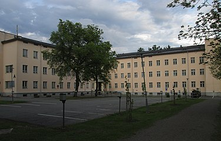

HAMK Häme University of Applied Sciences

HAMK Häme University of Applied Sciences (Finnish: Hämeen ammattikorkeakoulu) is an institution of higher education with seven locations in Finland. Its programmes are coordinated with industry and commerce. HAMK also offers research and development services, professional teacher education, further and continuing education and studies in the Open University of Applied Sciences.
HAMK operates at seven locations: Evo, Forssa, Hämeenlinna, Lepaa, Mustiala, Riihimäki and Valkeakoski. There are approximately 8,000 students and 600 staff members.